| Week | Date | Planned Activity | Delivery |
|---|---|---|---|
| 42 | Wed 07.10 | Intro to ML | Assignement 5 points |
| Fri 14.10 | Tree based methods | Assignement 5 points | |
| 43 | Wed 21.10 | Neural Networks | |
| Fri 13.10 |
Before we start: A small survey!
Imagine we want to create a predictive model for these data
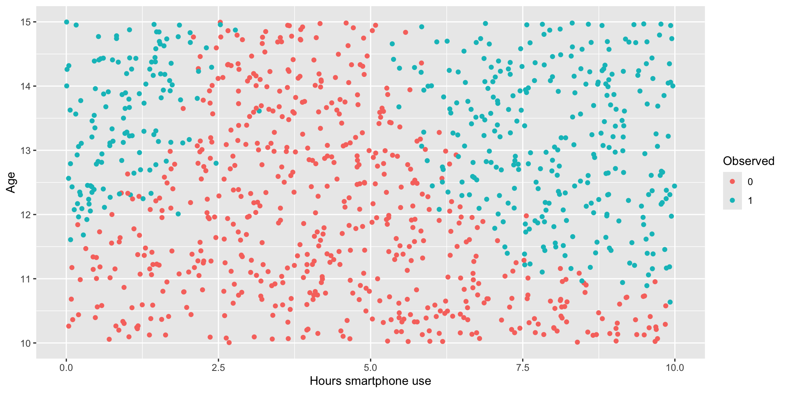
We can use logistic regression as before …
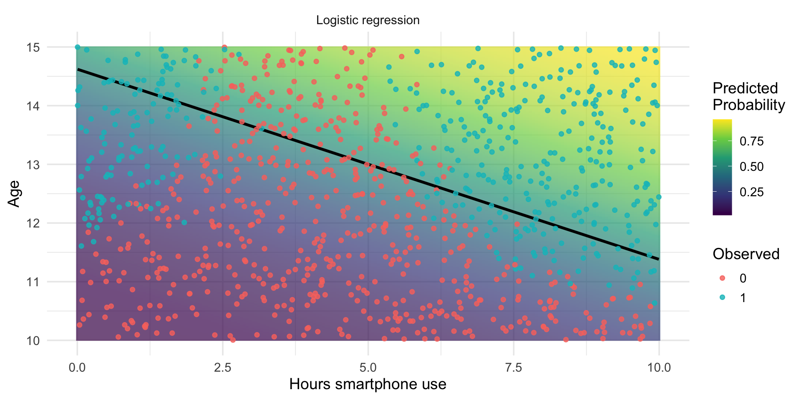
..but could we do better?
We might want less rigid models that can capture more characteristics of the data…
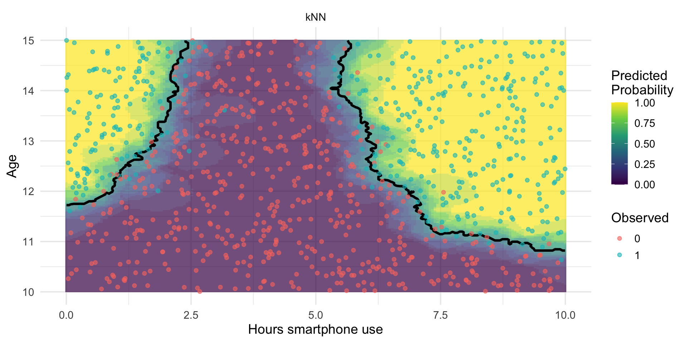
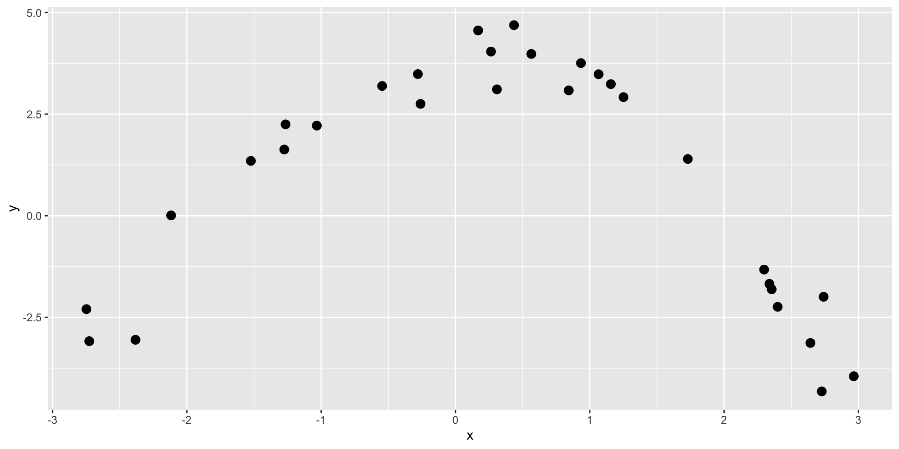
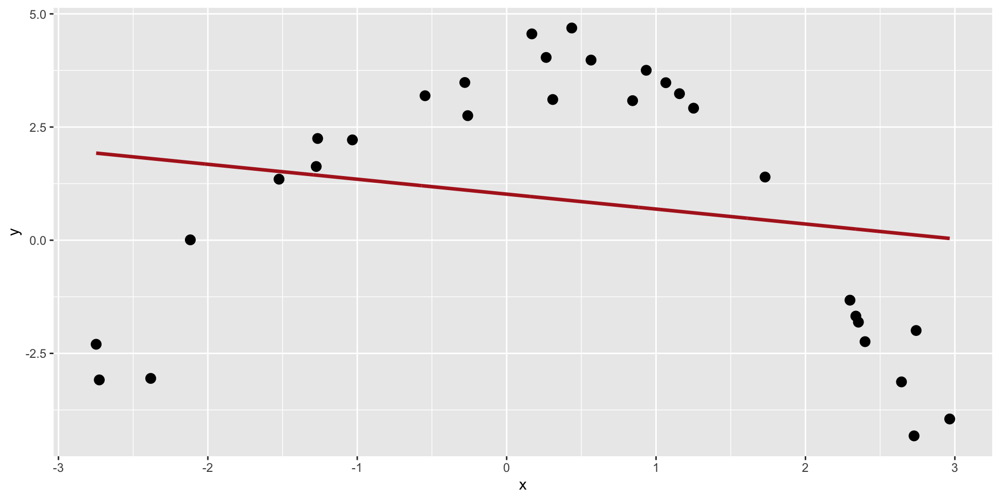
This model is too simple (it does not capture enough caracteristics of the data). We say that it underfits.
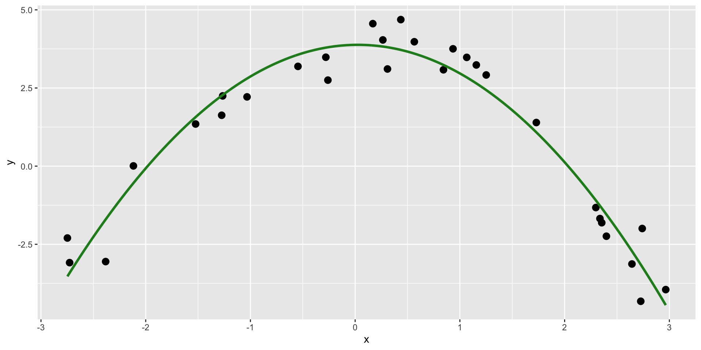
This model seems to capture the right amount of information.
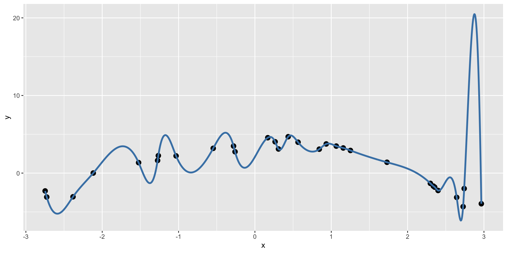
This model is too complex, it seems to capture also the noise in the data. We say that it overfits.
It cannot be generalized to other datasets.
KNN is a ML learning algorithm that makes a prediction for something new by looking at the most similar examples it has seen before.
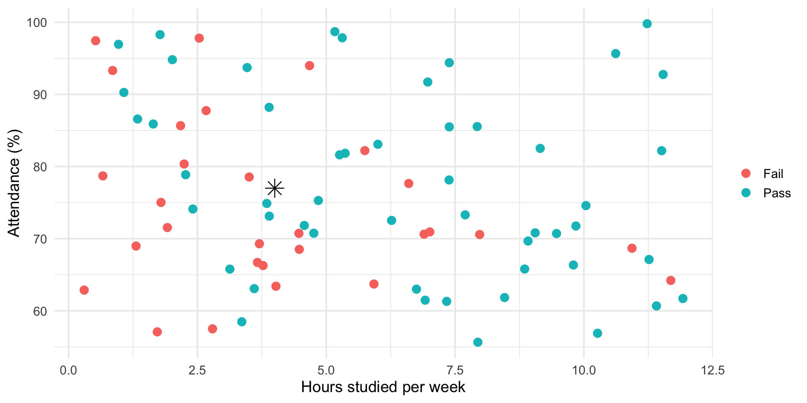
Group discussion Answer to the question on part 1 of the handout.
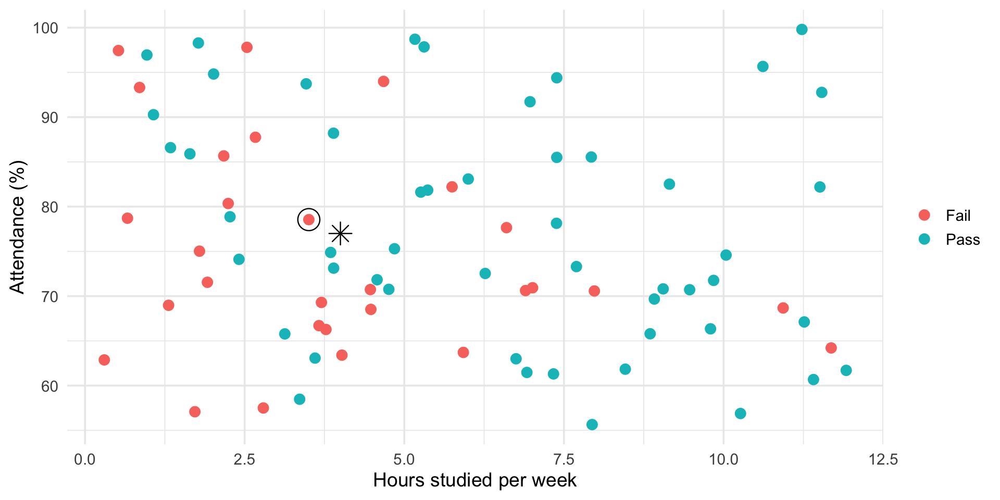
What is happening?
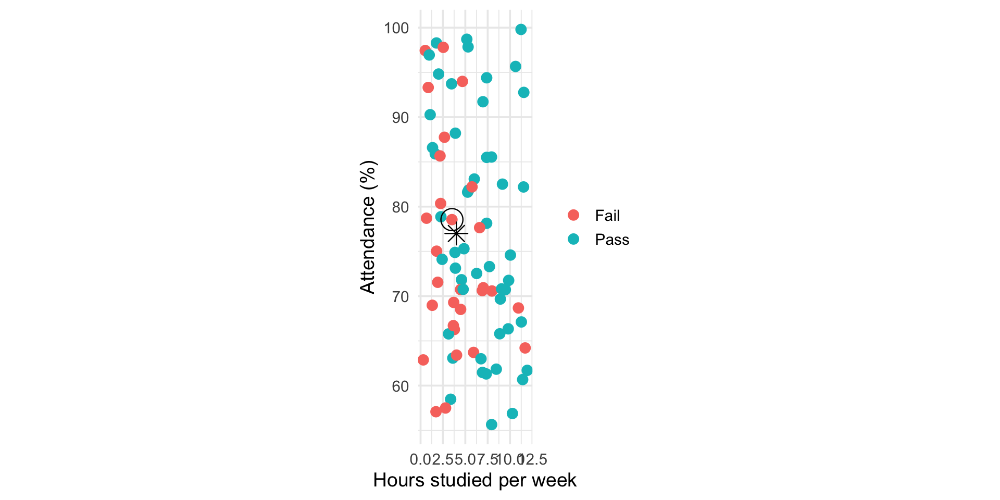
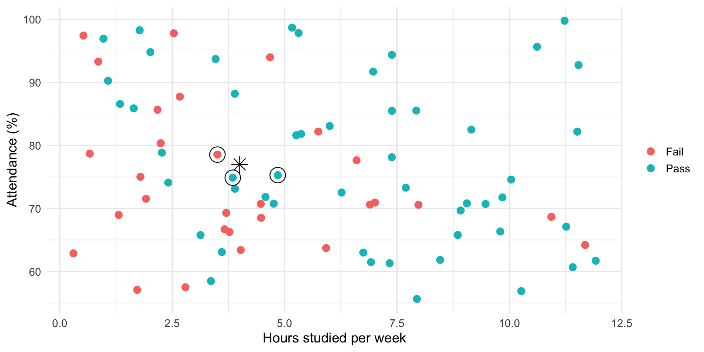
No defined model
Very flexible/ not many assumption
The answer depends on the parameter \(k\)…
Group discussion Answer to the question on part 2 of the handout.
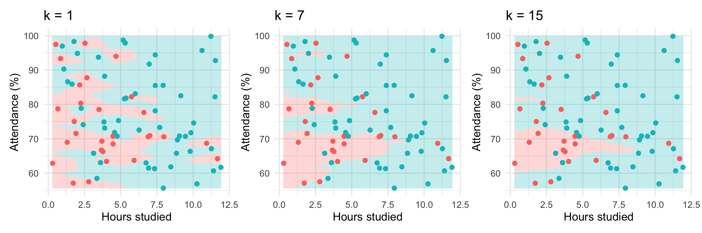
Ideally, we want to find a good balance between flexibility and smoothness.
We tune \(k\) based on a validation set (ie data that are not used to create the prediction model)
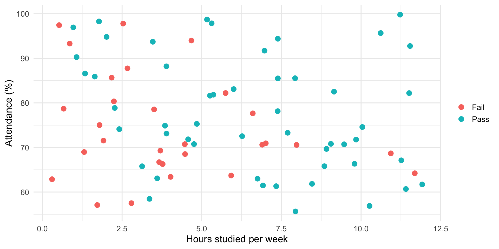
We tune \(k\) based on a validation set (ie data that are not used to create the prediction model)
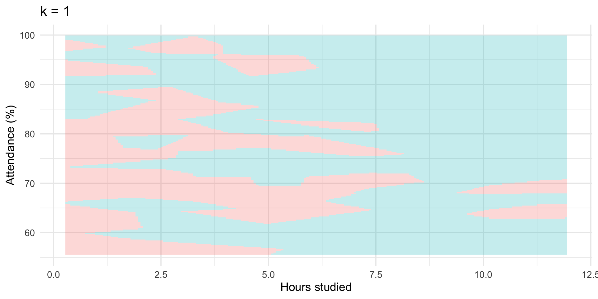
We tune \(k\) based on a validation set (ie data that are not used to create the prediction model)
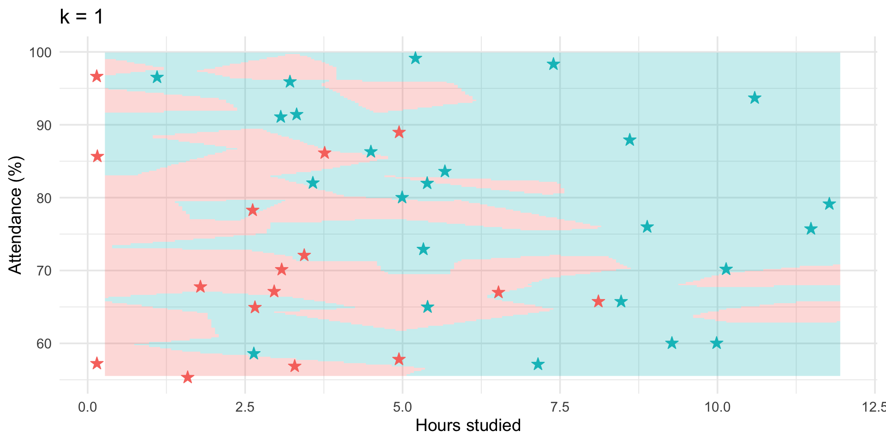
We tune \(k\) based on a validation set (ie data that are not used to create the prediction model)
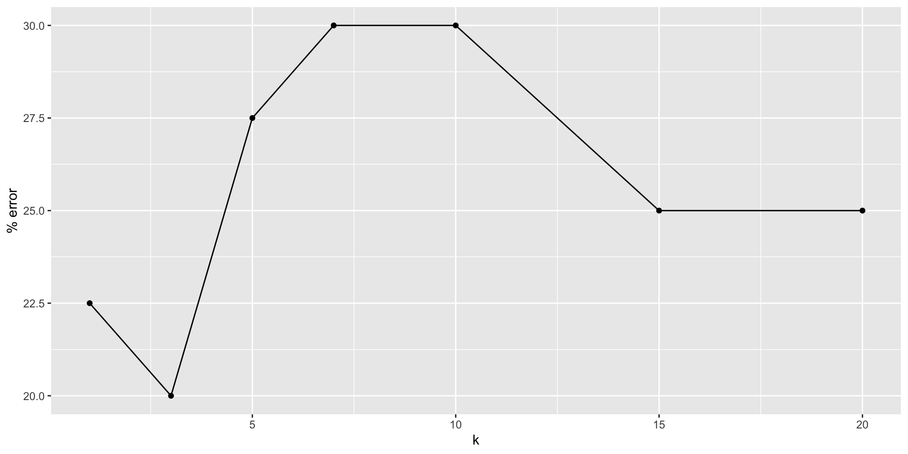
We tune \(k\) based on a validation set (ie data that are not used to create the prediction model)
Group discussion Answer to the question on part 3 of the handout.
Idea: Train on part of the data and test on data not used for training.
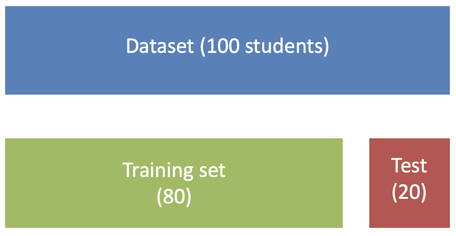
Note: Names can be sometimes confusing…
Repeat the train/test split several times and average the results.
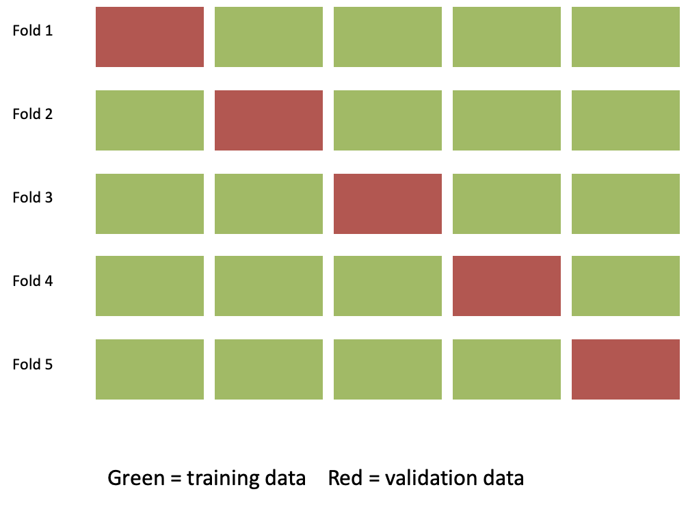